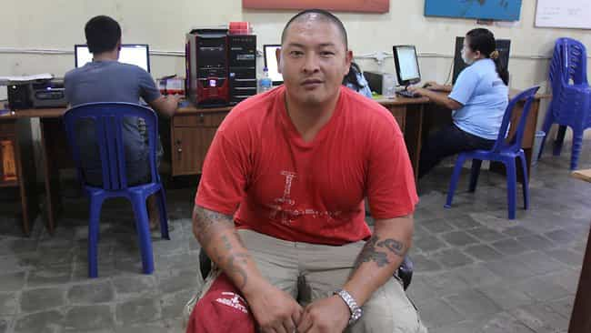
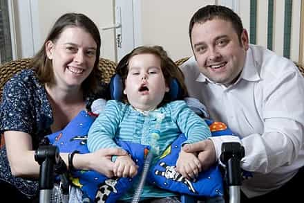
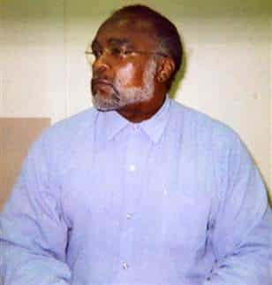

< < < Back
Two Self-Confessed Drug Ringleaders Are Enjoying Mass Public Sympathy – Return Of Kings
In April 2005, nine Australians were arrested for trying to smuggle US $3 million of heroin from Bali, Indonesia to Australia. The two ringleaders, Andrew Chan and Myuran Sukumaran, were amongst those initially sentenced to death in early 2006. Chan and Sukumaran’s “final” judicial appeals against the death sentence were dismissed in June and July 2011, respectively. Since late 2014, both men have repeatedly sought clemency from Indonesian President Joko Widodo and then appealed his rejections of mercy via the courts.
Over the weekend, the pair were informed their executions were imminent and would take place a minimum of 72 hours after the announcement. They will probably be executed within days (or hours) of my words being published.
In the meantime, many from all corners of Australia have incessantly rallied behind the two, who admitted to multiple drug smuggling operations before being caught. Supporters, including the Australian Prime Minister Tony Abbott, emphasize Chan and Sukumaran’s “rehabilitation” in prison, notably Chan’s ordination as a Christian minister, Sukumaran’s art abilities and both men’s facilitation of education for fellow inmates. Perth’s Curtin University fell over itself to confer an Associate Degree in Fine Arts on Sukumaran.
On Monday night, several hundred people turned up for a candlelit vigil for the death row pair, the most recent of many held in cities this year. Seeking to ingratiate themselves with a public still slowly turning away from their message, Catholic bishops and archbishops have been agitating for Chan and Sukumaran for months.
Apparently these clerics forget the more desperate members of their flock who didn’t choose to smuggle heroin and live on the streets of Australia, have had their houses foreclosed or daily suffer any other injustice or misery.
But why? Of all the people facing hard times in Australia and Indonesia, hit by cancer, poverty, mental illness, intellectual or physical disability, or injury from violence, why are the Australian political elite and SJWs robbing true victims of attention and channeling it towards two inveterate drug smugglers?
The Sukumaran and Chan debacle uncovers a pernicious trend in Western political and media discourse: people pretending they fight for justice when they instead caricature it. The meaning of victimhood is beaten and bent, and those who really need our support are ignored.
Why focus on these two?

How many blameless cancer victims get the help Chan and his friend Sukumaran have received?
Even if you abhor the death penalty, the amount of collective time and energy we can devote to social causes is finite. For instance, if you properly focus on preventing one or two instances of the death penalty, you naturally ignore a thousand similar cases, especially where guilt for the crime is seemingly not beyond reasonable doubt.
The same goes for “causes” in general. By devoting five hundred recent stories to Andrew Chan and Myuran Sukumaran, the Australian media neglects a litany of other, much more deserving issues. Although homelessness in Australia is on the rise, Alzheimer’s has become a cognitive scourge devastating hundreds of thousands of families, and the nation’s disabled still live in frequent poverty, we living Down Under are meant to tolerate the domination of our print media and airwaves by two narcissistic criminals who wanted a get-rich-quick scheme involving highly addictive narcotics.
This is not a scenario of innocent people falsely condemned. The evidence against them was incontrovertible, and Sukumaran, like most of the other Bali Nine members, was found with drugs strapped to his body. Plenty of additional Australians and other Westerners languish in Second and Third World jails, incarcerated under dubious processes where the evidence against them is open to wide interpretation. Why not speak up for them, Prime Minister Abbott?

How am I meant to feel sorry for Chan and Sukumaran when I see children like this?
Where were the TV crews when your aunt wasted away before you and horrifically died of cancer? Or when the lonely senior citizen who was your neighbour died quietly and nobody realized for two years? These sorts of cases happen around the world, every day, and governments and elites do not rush to lend a helping hand.
Indonesia is hypocritical – so what?
SJWs have devoted inordinate attention to Indonesia’s bipolar behavior in advocating for its own citizens sentenced to death abroad, but generally refusing to reverse death sentences against foreigners within its own legal system. This is exactly the standard practiced by every country in the world in some form or another. Hypocrisy is rife in every country.
What’s even more hypocritical, though, is ascribing victim status to two people who orchestrated multiple, massive drug smuggling operations and then had the audacity to cry “proper justice” when Indonesia, a serial death penalty user, sentenced them to the firing squad.
A criminal’s rehabilitation is based on a myth

When I was a teenager, I remember Stanley Tookie Williams “rehabilitating” himself after going on death row, too.
Unlike the convoluted, uneducated Corby family, whose wayward daughter Schapelle became the focus of innumerable bizarre conspiracy theories about how she was ever convicted in Bali for marijuana smuggling, the families of the two condemned men come across as decent, genuine and down-to-earth. This begs the question as to how Sukumaran and Chan became involved in the drugs trade to begin with, other than through a clear, thought-out choice for which they are now paying for. So boo-hoo.
Their attempts at “rehabilitation” dovetail nicely, as well, with the firing squad which has awaited them for years. Until the prospect of a death sentence loomed from around the corner, just after their arrest, they were unrepentant peddlers of pain and merchants of death. The buck mattered more than the bite it gave to those dying from the heroin they imported to Australia.
The problem, too, with rehabilitation is that it largely depends on an inmate’s background and levels of socialization. Poorer inmates, perhaps native Balinese or other Indonesians, would have been denied the relative privilege of Sukumaran and Chan, who grew up in run-of-the-mill, secure families in prosperous Australia. This affects the opportunities for condemned inmates to skilfully stage their rehabilitation and argue for clemency under a watchful media eye.
These men, unlike their prison colleagues, have also always had the benefits of mass public support and a Foreign Ministry probably unrivalled in its drive to defend the interests of its incarcerated nationals abroad. These advantages have enabled Sukumaran and Chan to hone their skills in jail and “selflessly” teach them to others. There is nothing altruistic and everything self-preserving about these calculated actions.
Focus on the real victims
We should not shed a tear for Chan and Sukumaran until those more deserving of our sympathy and assistance have it given to them. When they die, these Australians will die of their own volition, having proactively chosen the firing squad.
The distortion of victimhood has now reached its apex with examples such as this. True victims have been hidden behind a curtain for too long, muddied by political correctness and gimmicky social media and “social justice” campaigns.
Start dealing with real issues. Chan and Sukumaran brought their fate on themselves. Let them now eat the cake they baked.
Read More: Dr. Oz Is A Pussy